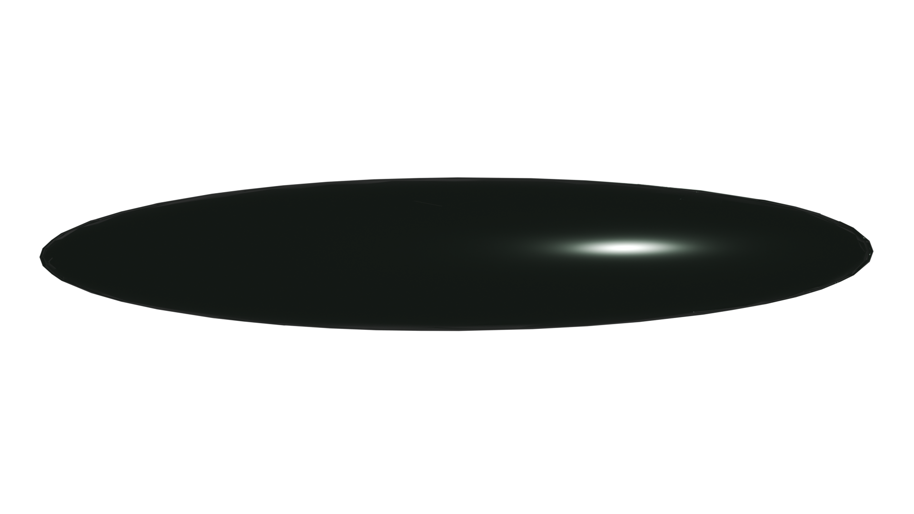

Blender / 3D
Obsidian UI Widget
Custom obsidian and sage metallic button built and shaded using Blender's Principled BSDF and studio environment lighting.
View Asset →Documenting my journey across Figma layouts, Blender 3D UI components, Jitter animations, and clean frontend engineering

Custom obsidian and sage metallic button built and shaded using Blender's Principled BSDF and studio environment lighting.
View Asset →Establishing lightweight vector motion design pipelines converting static UI components into smooth web interactions.
Read Note →Custom AI-driven assistant built to automate freelance scope generation and retainer estimates.
View System →